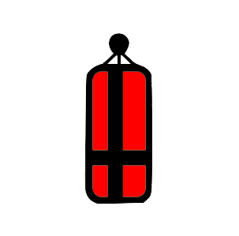
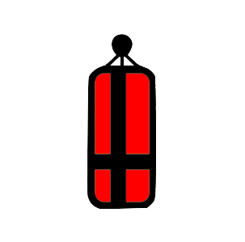

Software
Sketchbook.
Adobe Illustrator.
Inspiration and Sketches
The image to the left portrays my initial sketches while I was still deciding which theme to choose. I find thumbnails to be an effective way to get out as many ideas as possible for a successful outcome. Once I chose to create Muay Thai icons, you can see in the photo in the middle that I used several online images as inspiration. You can also scroll through the pdf of my idea drafts on the right which I sketched out before moving on to designing with Adobe Illustrator.

 
